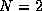
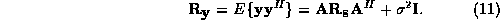
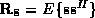
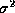
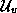
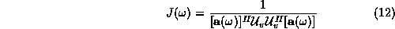
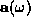
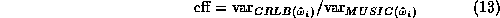

MUSIC detects frequencies in a signal by performing an eigen decomposition
on the covariance matrix of a data vector of  samples obtained from
the samples of the received signal.
The key to MUSIC is its data model
samples obtained from
the samples of the received signal.
The key to MUSIC is its data model
where is a vector of noise samples, is a vector
of  signal amplitudes (
signal amplitudes (

for DTMF tones), and is the Vandermonde matrix of samples of the signal frequencies. If we assume a zero-mean signal and white noise, then the covariance of has the form
Here,

is the signal autocorrelation matrix, is the identity matrix, and
is the noise variance. From the eigen decomposition of , we use the eigenvectors
associated with the maximum eigenvalues to define the signal subspace
(the column space of ), and use the other eigenvectors to define
the noise subspace,
, we use the eigenvectors
associated with the maximum eigenvalues to define the signal subspace
(the column space of ), and use the other eigenvectors to define
the noise subspace, 
. From the orthogonality of the signal and noise subspaces, finding the peaks in the estimator function
for various  values yields the strongest frequencies [1],
where
values yields the strongest frequencies [1],
where

refers to the columns of .
MUSIC assumes that the number of samples and the number of frequencies
are known.
The efficiency of MUSIC is the ratio of the theoretical smallest
variance, given by the Cramer-Rao Lower Bound (CRLB) [11],
to the variance of the MUSIC estimator:

The efficiency does not depend on the total number of samples,  ,
(Figure 1) but does depend on (Figure 2).
As increases, efficiency and computation time increase.
We pick
,
(Figure 1) but does depend on (Figure 2).
As increases, efficiency and computation time increase.
We pick  , because larger values do not significantly improve
the efficiency.
, because larger values do not significantly improve
the efficiency.